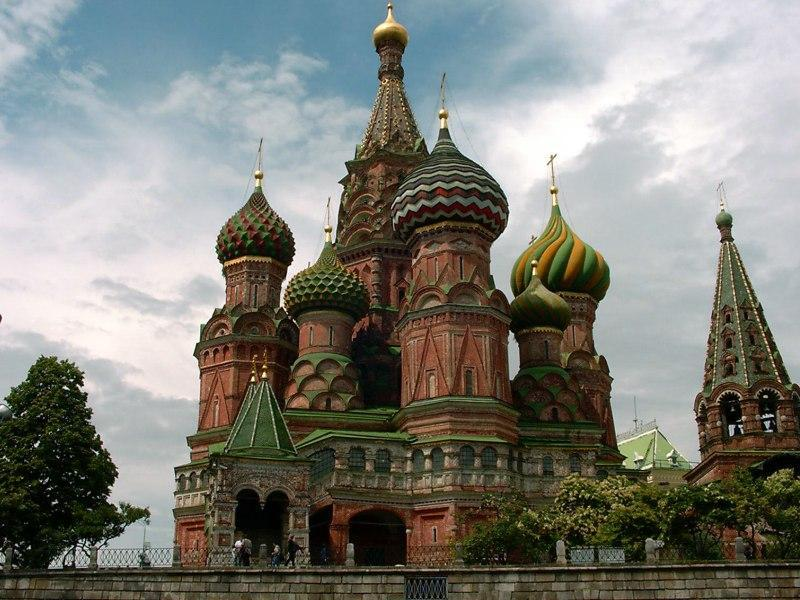
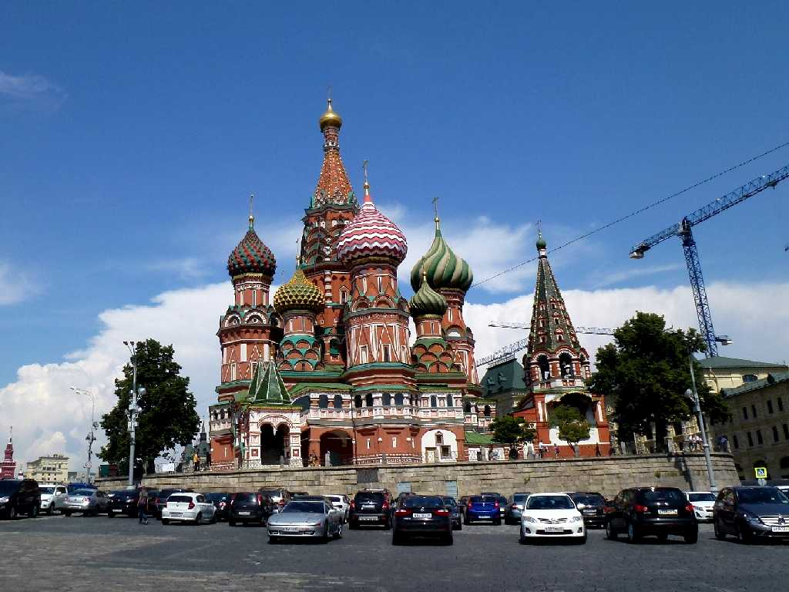
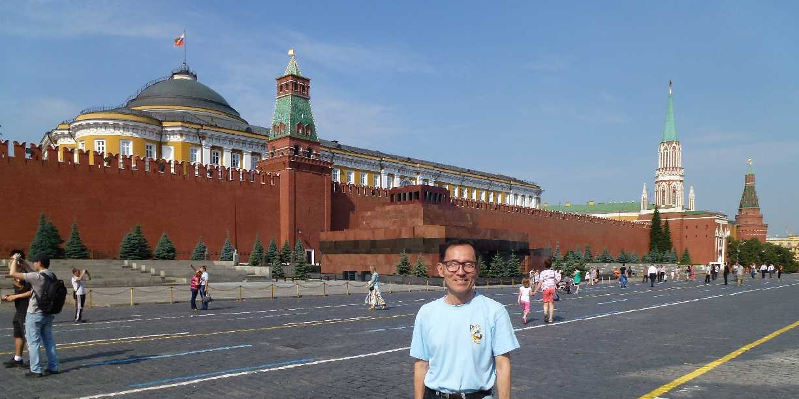
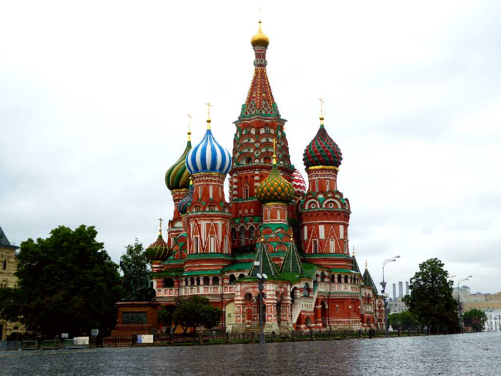
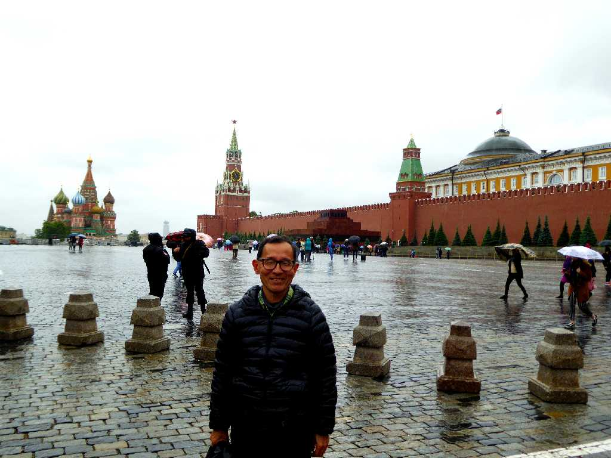

August 1989 Saint Basil's Cathedral Red Square Moscow
ネギ坊主のキューポラをいただくロシア寺院建築の傑作でかつて皇帝の命令がここで読み上げられた

Saint Basil's Cathedral Red Square
８０日間世界一周鉄道の旅で２４年ぶりのモスクワ再訪問

July 5 2013 Red Square
共産主義から資本主義の時代に変わり街が当時より明るく感じられる

Saint Basil's Cathedral Red Square
西ロシア周遊３,０００ｋｍの旅で４年ぶりの再訪問

June 15 2017 Saint Basil's Cathedral Red Square
クリミア併合による経済制裁を受け為替レートが３３％下落している 地下鉄料金も３０ルーブルから５５ルーブルに値上がりしてインフレ状態となっている
ここモスクワから西ロシアを周遊する３,０００ｋｍの旅が始まる